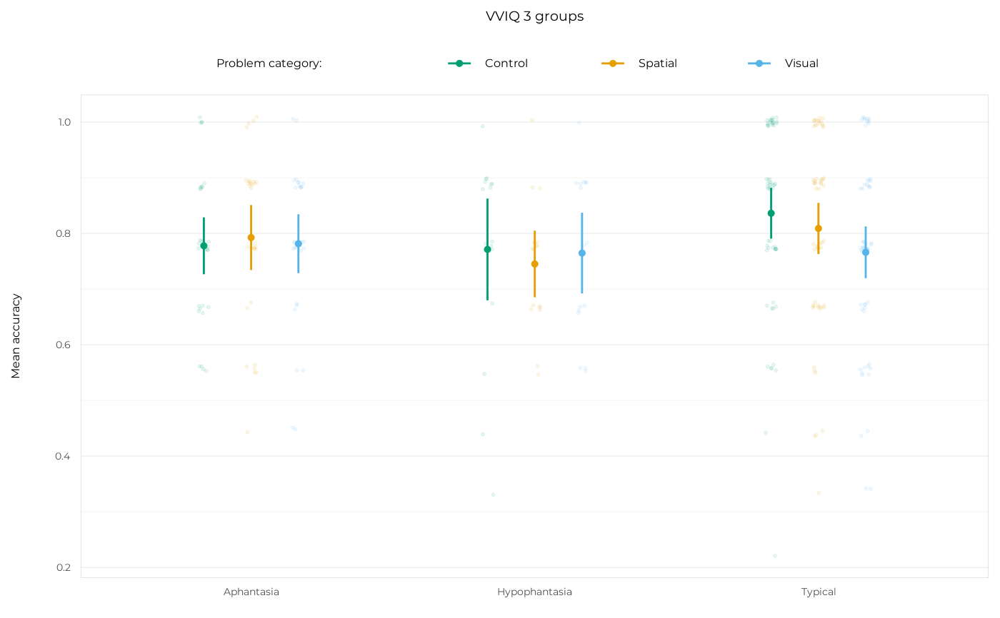
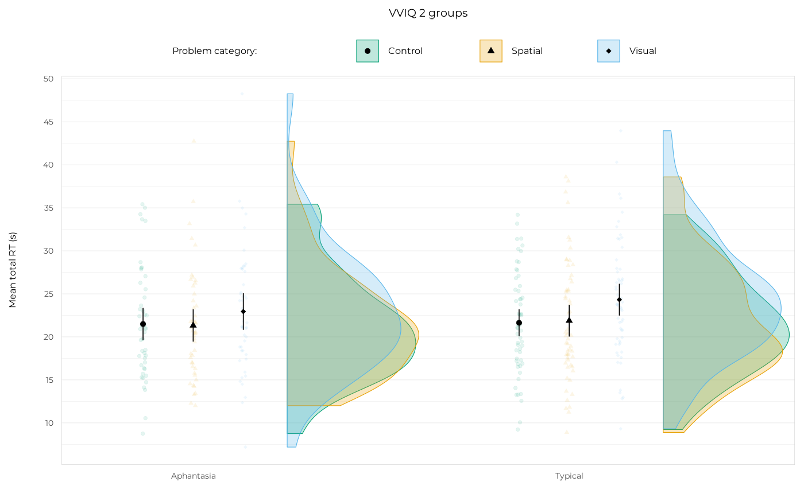
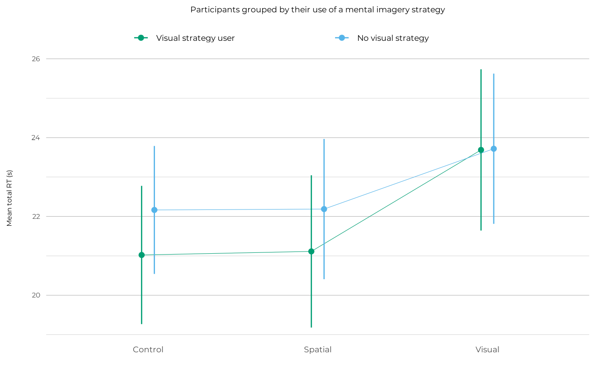

Plot accuracy or RT data with the superb package
Source: R/plotting_with_superb.R
plot_superb_raincloud.RdThese functions create raincloud, jitter or line plots using the superb
package, which allows to compute and plot correct 95% confidence intervals
easily. superb allows for a lot of customisation, however it is not
fully explained in its documentation, so I had to do a lot of trial and
error to get the plots looking the way I wanted. The functions here wrap the
core superb::superb() function and have lot of (thankfully, optional)
arguments that make the customisation options I used more explicit.
They are set by default to make the figures look good in a small format for
PDF export (see save_ggplot()).
plot_superb_jitter creates jitter plots to visualise the distribution
of individual participant means of a dependent variable (e.g., accuracy or
reaction time) across different categories and groups along with overall
means and 95% confidence intervals.
plot_superb_raincloud creates "raincloud" plots that combine the jitter
plots with half-violins that represent the density of the distributions.
plot_superb_categories switches the mapping of the x-axis and the colours
to have the three categories on the x-axis and the groupings as colours.
It uses the "line" plots from the superb package to connect the means
across categories for each group.
Usage
plot_superb_raincloud(
df,
dvar,
grouping,
title = NULL,
x_title = NULL,
y_title = NULL,
dot_size = 1.5,
dot_alpha = 1,
jitter_size = 1,
jitter_alpha = 0.1,
jitter_width = 0.2,
jitter_height = 0,
dodge_width = 0.4,
errorbar_linewidth = 0.3,
errorbar_h_width = 0,
trim = TRUE,
violin_width = 0.7,
violin_linewidth = 0.2,
exp_mult = 0,
exp_add_left = 0,
exp_add_right = 0.6,
n_breaks = 10,
visual_colour = palette.colors()[3],
control_colour = palette.colors()[4],
spatial_colour = palette.colors()[2],
axis_rel = 0.9,
axis_rel_x = 1,
legend_rel = 1,
legend_name = "Problem category: ",
border_colour = "grey80",
violin_position_adjust = 0,
jitter_adjust = 0.05,
...
)
plot_superb_jitter(
df,
dvar,
grouping,
title = NULL,
x_title = NULL,
y_title = NULL,
dot_size = 1.5,
dot_alpha = 1,
jitter_size = 0.75,
jitter_alpha = 0.1,
jitter_width = 0.1,
jitter_height = 0.01,
dodge_width = 0.5,
errorbar_linewidth = 0.5,
errorbar_h_width = 0,
exp_mult = 0,
exp_add = 0.6,
visual_colour = palette.colors()[3],
control_colour = palette.colors()[4],
spatial_colour = palette.colors()[2],
legend_name = "Problem category: ",
axis_rel = 0.9,
border_colour = "grey80",
...
)
plot_superb_categories(
df,
dvar,
grouping,
title = NULL,
x_title = NULL,
y_title = NULL,
dot_size = 2.25,
dot_alpha = 1,
errorbar_linewidth = 0.5,
errorbar_h_width = 0,
exp_mult = 0,
exp_add = 0.6,
axis_rel = 1,
axis_rel_x = 1.2,
legend_name = NULL,
legend_rel = 1.2,
aph_colour = palette.colors()[3],
hypo_colour = palette.colors()[2],
typ_colour = palette.colors()[4],
hyper_colour = palette.colors()[1],
no_visual_colour = palette.colors()[3],
visual_strat_colour = palette.colors()[4],
panel_maj_y_colour = "grey70",
panel_min_y_colour = "grey70",
...
)Arguments
- df
A data frame containing the data to be plotted.
- dvar
The dependent variable to be averaged and plotted, typically
accuracyorrt_total.- grouping
A variable to group the data by, e.g.,
group,group_2,group_3,strategy_group, etc.- title
Optional. Title for the plot.
- x_title
Optional. Title for the x-axis.
- y_title
Optional. Title for the y-axis.
- dot_size
The size of the dots that represent group means.
- dot_alpha
The alpha transparency of the dots that represent group means.
- jitter_size
The size of the individual data points.
- jitter_alpha
The alpha transparency of the individual data points.
- jitter_width
The width of the jitter applied to individual data points.
- jitter_height
The height of the jitter applied to individual data points.
- dodge_width
The width of the dodge applied to separate groups.
- errorbar_linewidth
The line width of the black error bars representing 95% confidence intervals around the group means.
- errorbar_h_width
The width of the horizontal black lines at the top and bottom of error bars.
- trim
Logical, whether to trim the violins to the range of the data.
- violin_width
The width of the violins.
- violin_linewidth
The line width of the outline of the violins.
- exp_mult
A multiplier for the
ggplot2::expansion()function to increase the space between the axis and the data.- exp_add_left
An additional value for the
ggplot2::expansion()function to increase the space on the left side of the x-axis.- exp_add_right
An additional value for the
ggplot2::expansion()function to increase the space on the right side of the x-axis.- n_breaks
The number of breaks passed to the
scales::breaks_pretty()function.- visual_colour
A colour for the "Visual" category dots and violins. Default is the Okabe-Ito palette's blue.
- control_colour
A colour for the "Control" category dots and violins. Default is the Okabe-Ito palette's green.
- spatial_colour
A colour for the "Spatial" category dots and violins. Default is the Okabe-Ito palette's orange.
- axis_rel
A numeric value for the relative size of the axis text compared to the base size.
- axis_rel_x
A numeric value for the relative size of the x-axis text compared to the axis text size (which already depends on base size). This argument allows to dissociate the size of the x and y axes' texts.
- legend_rel
A numeric value for the relative size of the legend text compared to the base size.
- legend_name
A name for the legend. Default is "Problem category: ".
- border_colour
A colour for the border around the plot area.
- violin_position_adjust
A numeric value adjusting the space between the violins and the dots, which is unnecessarily wide in the
superbpackage's defaults. Default is 0 (to remove all that space).- jitter_adjust
A numeric value adjusting the width of the jitter applied to individual data points, which is unnecessarily wide in the
superbpackage's. Default is 0.05 (to reduce the jitter drastically). Works in conjunction withjitter_width.- ...
Additional arguments passed to the
theme_pdf()function for customising the plot theme.- exp_add
An additional value for the
ggplot2::expansion()function to increase the space on the sides of the x-axis.- aph_colour
A colour for the "Aphantasia" category dots and violins. Default is the Okabe-Ito palette's green.
- hypo_colour
A colour for the "Hypophantasia" category dots and violins. Default is the Okabe-Ito palette's orange.
- typ_colour
A colour for the "Typical" category dots and violins. Default is the Okabe-Ito palette's blue.
- hyper_colour
A colour for the "Hyperphantasia" category dots and violins. Default is the Okabe-Ito palette's black.
- no_visual_colour
A colour for the "No visual strategy" category dots and violins. Default is the Okabe-Ito palette's green.
- visual_strat_colour
A colour for the "Visual strategy user" category dots and violins. Default is the Okabe-Ito palette's blue.
- panel_maj_y_colour
A colour for the major grid lines on the y-axis. Default is "grey70".
- panel_min_y_colour
A colour for the minor grid lines on the y-axis. Default is "grey70".
Value
A ggplot2 object showing the distribution of the dependent variable across categories and groups, means, and 95% confidence intervals.
Examples
df_expe <- get_clean_data()$df_expe
df_rt <- filter_trials_on_rt(df_expe)
if (require("superb", quietly = TRUE)) {
plot_superb_jitter(
df_expe, accuracy, group_3,
title = "VVIQ 3 groups", y_title = "Mean accuracy",
base_size = 12
)
}

if (require("superb", quietly = TRUE)) {
plot_superb_raincloud(
df_rt, rt_total, group_2,
title = "VVIQ 2 groups", y_title = "Mean total RT (s)",
base_size = 12
)
}

if (require("superb", quietly = TRUE)) {
plot_superb_categories(
df_rt, rt_total, strategy_group,
title = "Participants grouped by their use of a mental imagery strategy",
y_title = "Mean total RT (s)",
base_size = 12
)
}
